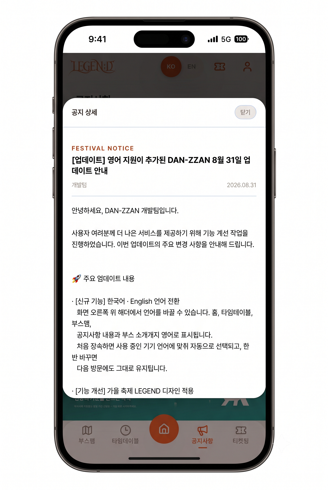
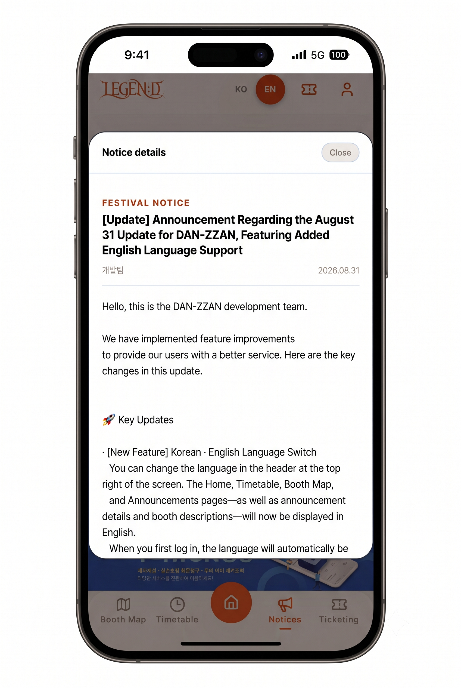
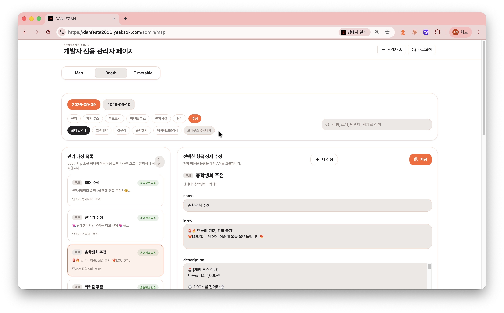
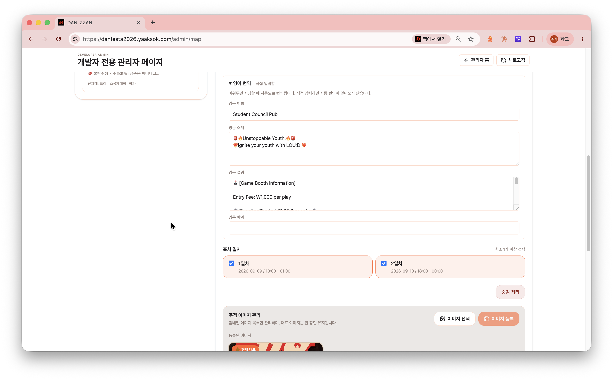

번역 누락 복구: 로그·DB·영어 화면으로 확인
운영 중 발견한 번역 누락 복구 / 실제 번역 대상과 신규 공지로 확인
문제
- 봄축제 유학생 이용 불편을 바탕으로 팀이 가을축제에 영어 지원 도입
- 운영 중 번역 누락 발견 · 번역 기능 구현 담당자와 협의 후 복구 담당
접근
- Docker Compose 서버 로그 확보 · AI 도구와 원인 분석
- 원인: 번역 영문의 MySQL 컬럼 길이 초과 → 전체 저장 롤백 및 동일 데이터 반복 번역
- AI 활용 컬럼 확장 · 저장 트랜잭션 행별 분리
결과
- 처리 로그 0 확인 후에도 AI 제안에 따라 DB 잔여 데이터 점검
- 조회 조건을 실제 번역 대상과 일치시키고 공백 데이터 정리 → SQL로 미번역 대상 0건 확인
- 새 공지 자동 번역·저장·영어 화면 표시까지 검증
복구 검증미번역 대상 0건실제 번역 대상 조건의 SQL 조회로 확인 · 새 공지의 번역·저장·영어 화면 표시 검증

한국어 공지
영어 공지
한국어 부스 정보 입력
영문 번역 확인·수정가을축제 번역 화면 · 팀 공동 산출물. 개인 기여는 운영 중 번역 누락의 원인 분석·복구 및 저장·화면 검증.
DB 직접 수정에서 업무별 권한 관리로
권한 관리 구현 완료 / 2026년 11월 고도화 서비스 재배포 예정
문제
- 초기 운영: 스태프 관리자 권한 부여 시 운영 DB 직접 수정
- 운영진 변경마다 개발자를 거치는 절차를 후속 개선 과제로 선정
접근
- Notion 접근 권한 방식 참고 · 팀과 이메일 초대·관리자 역할만 두는 방식 등 검토
- 검토 기준: 담당 업무에 필요한 범위만 허용
- 팀 결정: 최고관리자가 가입 회원을 학번으로 검색해 매니저 지정 · 운영 관리/티켓팅 권한 분리 부여
- 역할별 화면·기능 범위 정의 · Codex에 계획 수립/검수/구현을 나눠 요청
- 메뉴 표시와 서버 API 양쪽에서 권한 확인
- 축제 설정: 권한별 항목 표시 · 저장 버튼 하나로 통합
결과·현재 상태
- 운영진 지정 및 업무별 권한 변경·회수 기능 구현
- 두 차례 축제 운영 경험 기반 고도화
- 기존 서버 운영 종료 상태 · 2026년 11월 재배포 및 졸업작품 시연 준비